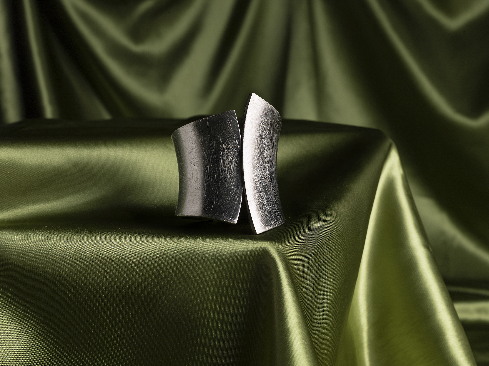
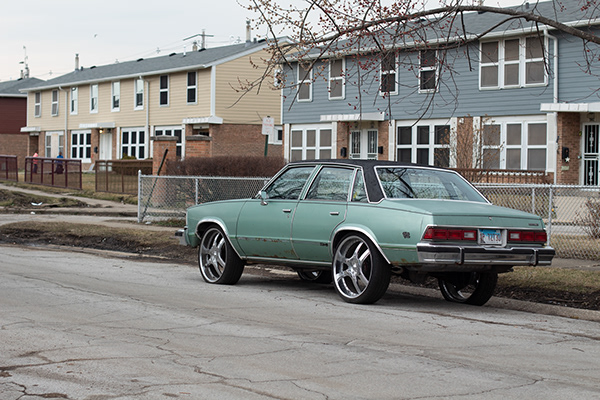
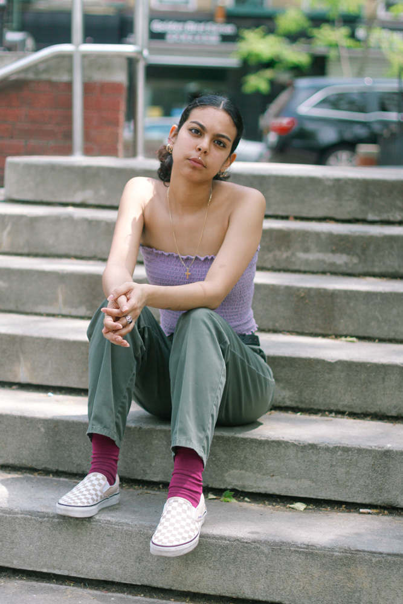
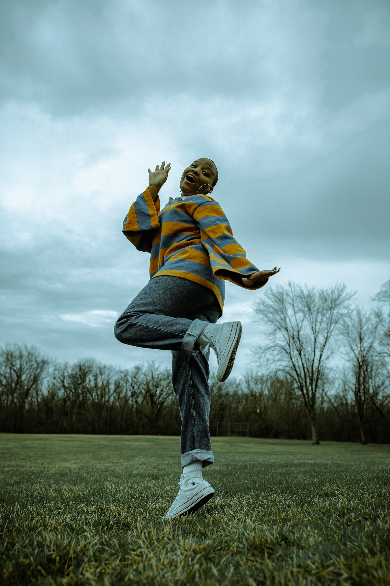
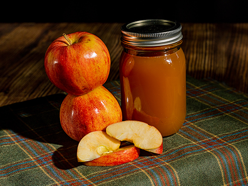
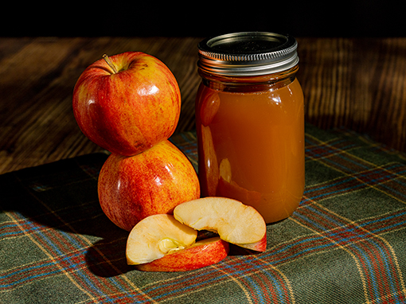

Commercial photography involves the taking of photographs for commercial uses (product shots, head-shots, etc). These photographs are often used for the promotional marketing of a business including website placement, product previews, and business card/marketing material images.
Documentary

Documentary Photography is a narrative or story being told through photographs that involves real events to provide a factual record or report (and sometimes this is complimented with text). Portraiture, documentary landscape, photojournalism, live events, street photography, self portraiture, sports photography.
Portraits

Portrait photography is all capturing some sense of a person's character rather than producing a technically perfect composition. Bringing out your subject's unique characteristics is one of the features including developing an eye for a good portrait shot and learning how to turn an average shot into a great one.
About

My work is mainly focused on portraiture and documentary. I have always wanted to capture life and the stories that come with it. When it comes to my work it is done with heart and a 110% effort. This helps create a beautiful image and unique experience.
.png)
 
